第06章 章节复习专题：整式及其加减
第06章 章节复习专题：整式及其加减
(13类热点题型讲练)

目录
【考点一 单项式、多项式、整式的判断】 1
【考点二 同类项的判断及含参数问题】 3
【考点三 单项式的系数、次数】 4
【考点四 多项式的项、项数或次数】 5
【考点五 写出满足某些特征的单项式、多项式】 7
【考点六 将多项式按某个字母升幂（降幂）排列】 8
【考点七 整式的加减运算】 9
【考点八 整式加减运算中先化简再求值】 11
【考点九 整式的加减运算中错解复原问题】 14
【考点十 整式加减中的无关型问题】 16
【考点十一 整式加减的应用】 18
【考点十二 整式加减中的新定义型问题】 20
【考点十三 整式加减中的规律探究问题】 24

【考点一 单项式、多项式、整式的判断】
例题：（23-24七年级上·广东广州·期中）在式子 ，
， ，
， ，
， ，
，
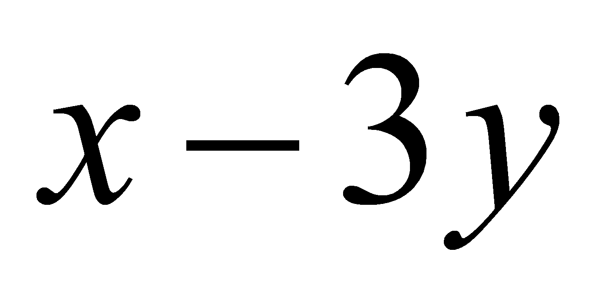
中，整式有（ ）A．2个 B．3个 C．4个 D．5个
【变式训练】
1．（23-24九年级上·河南安阳·期中）下列各式中： ，π，
，π，
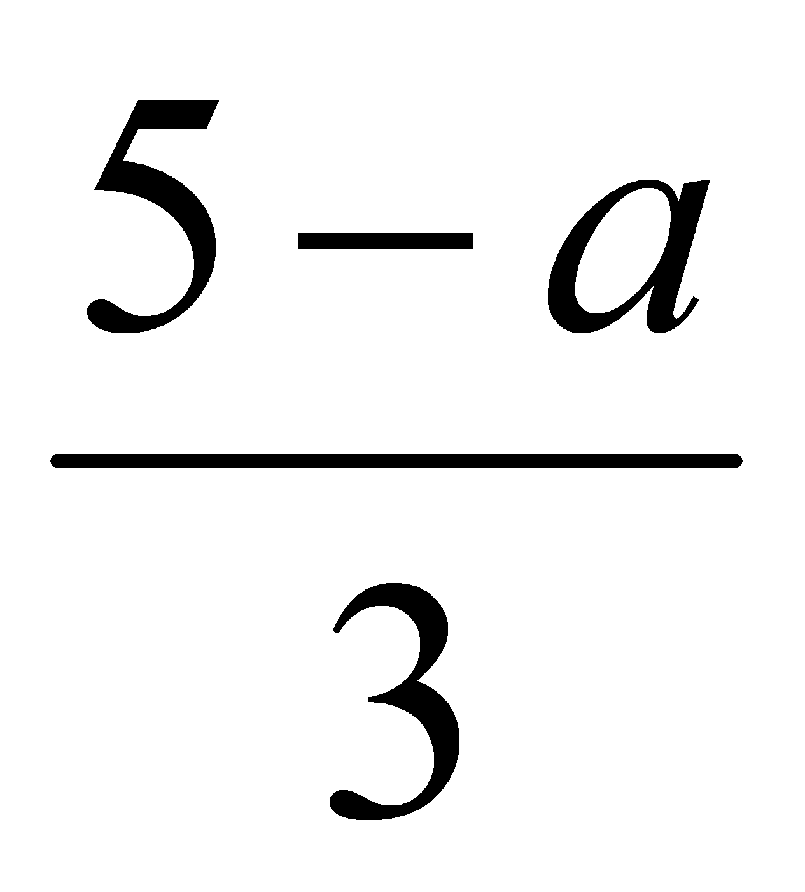
，0， ，单项式有（ ）
，单项式有（ ）A．2个 B．3个 C．4个 D．5个
2．（23-24七年级上·重庆江北·期中）下列式子：① ；②0；③
；②0；③ ；④
；④ ；⑤
；⑤ ；⑥
；⑥ 多项式的个数是（ ）
多项式的个数是（ ）
A．1个 B．2个 C．3个 D．4个
3．（23-24七年级上·湖南怀化·期末）下列代数式
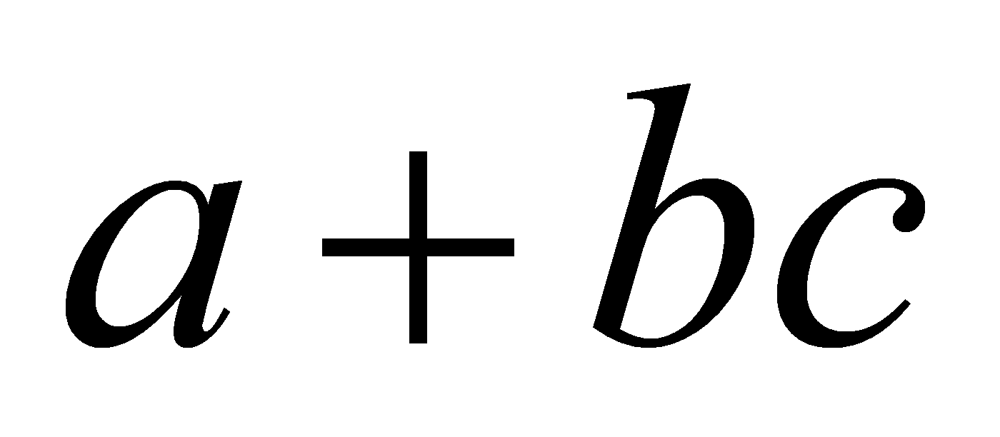
、 、
、 、
、 、
、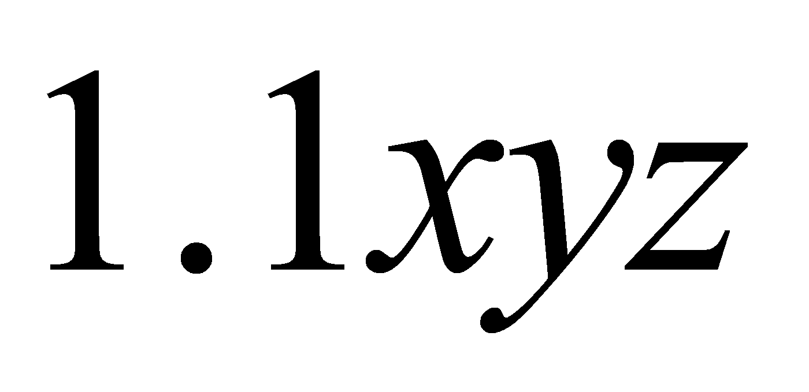
、9、 其中整式有（ ）
其中整式有（ ）A．7 B．6 C．5 D．4
【考点二 同类项的判断及含参数问题】
例题：（23-24七年级上·海南儋州·期末）下列各式中，与
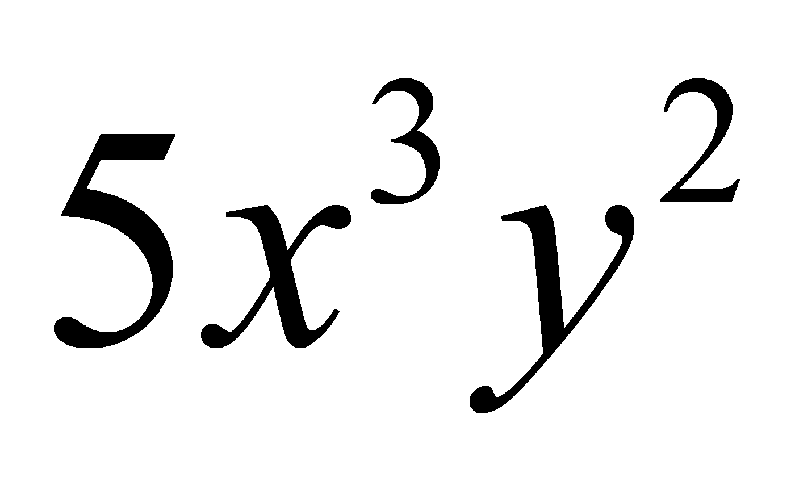
是同类项的是（ ）A． B．
B．
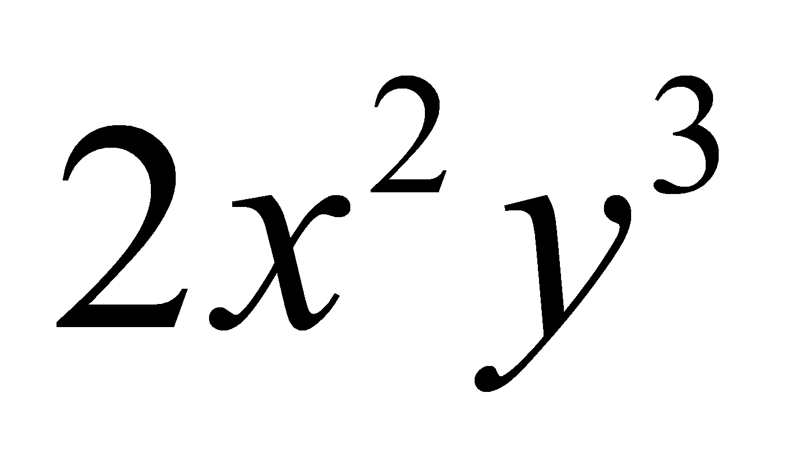
C．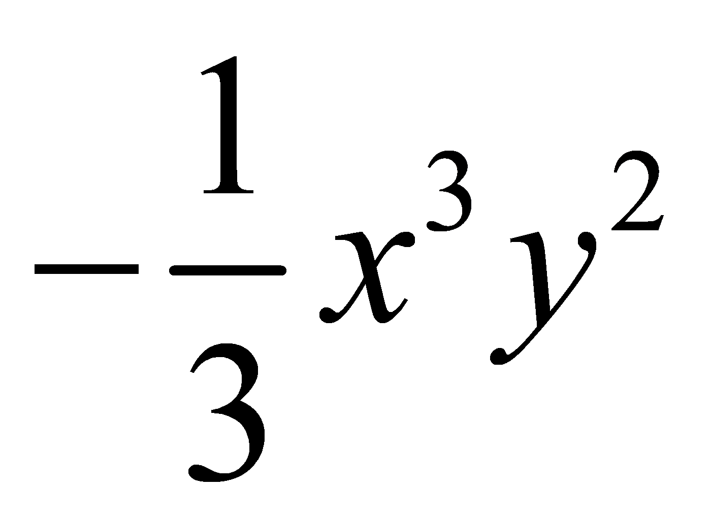
D．
【变式训练】
1．（23-24七年级上·江苏徐州·期末）不是同类项的是（ ）
A． 和
和 B．
B． 和
和 C．
C．
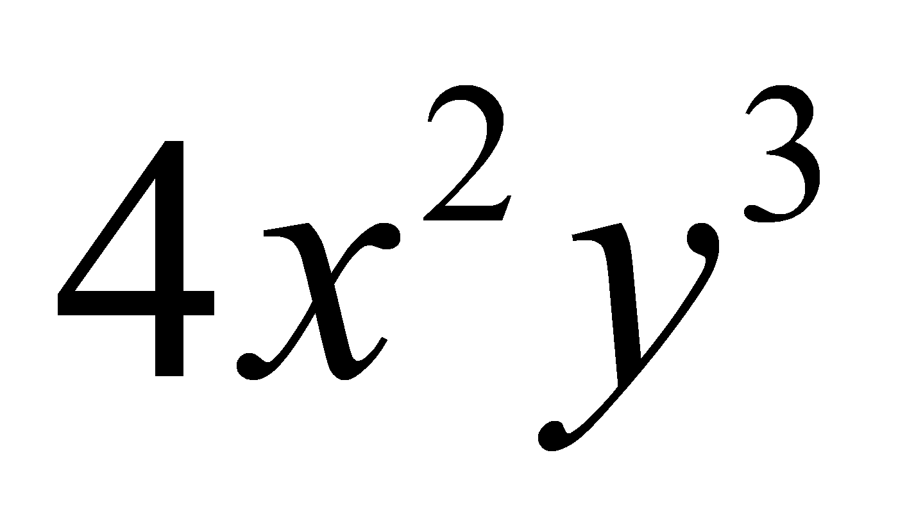
和 D． 和
和
2．（23-24六年级上·山东青岛·期末）已知 与
与
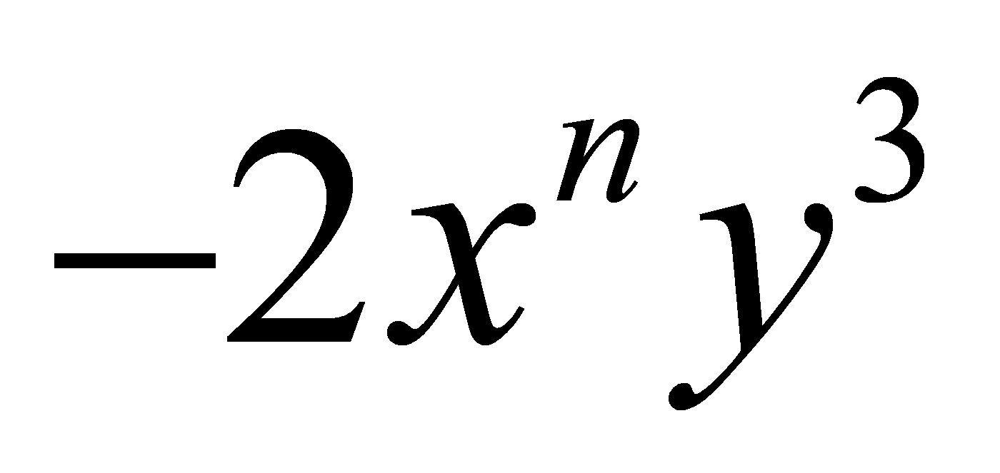
是同类项，则 ，
， ．
．3．（23-24七年级下·重庆万州·期末）若单项式 与
与 是同类项，则
是同类项，则
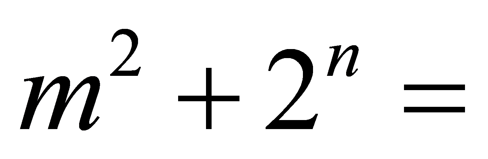
．【考点三 单项式的系数、次数】
例题：（23-24七年级上·北京大兴·期中）单项式
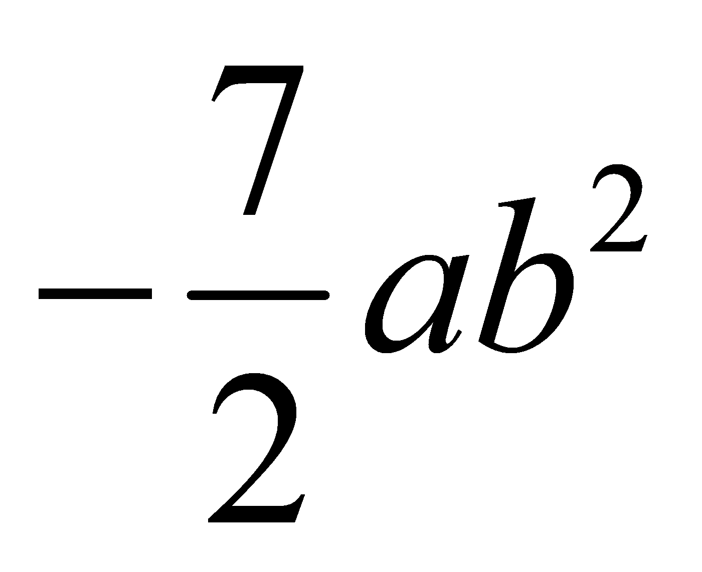
的系数是 ，次数是 ．【变式训练】
1．（23-24七年级上·内蒙古呼和浩特·期中） 的系数为 ，次数是 ．
的系数为 ，次数是 ．
2．（23-24七年级上·山东青岛·期末）单项式 的系数是 ，次数是 ．
的系数是 ，次数是 ．
3．（23-24七年级上·广西贵港·期末）单项式
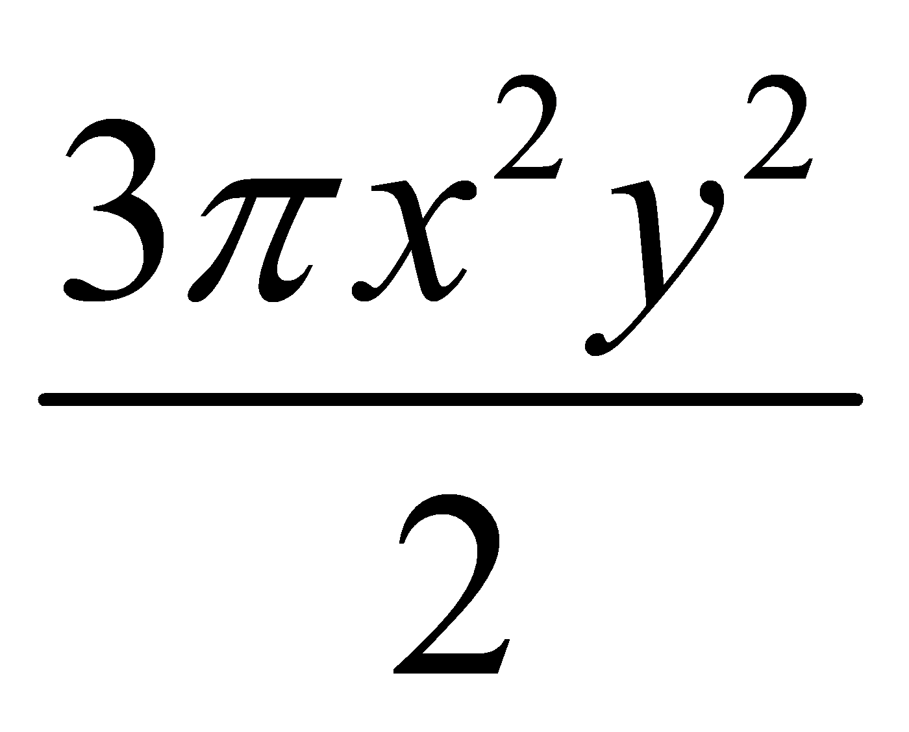
的系数是 ，次数是 ．【考点四 多项式的项、项数或次数】
例题：（23-24七年级上·河南郑州·期末）关于多项式
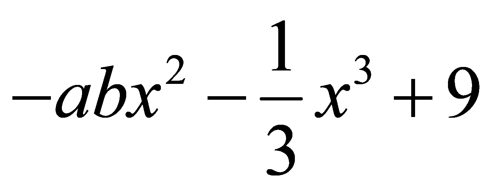
的说法错误的是（ ）A．有三项，次数是 B．常数项为
B．常数项为
C．常数项是 D．各项分别是
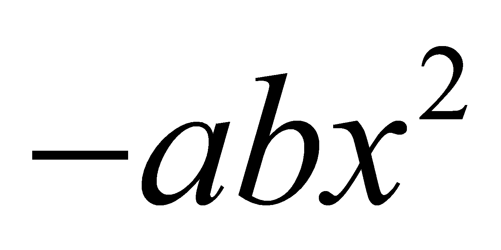
， ，
，【变式训练】
1．（23-24七年级上·四川雅安·期末）下列关于多项式
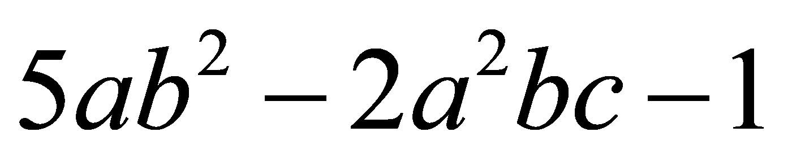
的说法中，正确的是（ ）A． 的次数是3 B．
的次数是3 B． 的系数是2 C．它是七次三项式 D．它的常数项是1
的系数是2 C．它是七次三项式 D．它的常数项是1
2．（23-24七年级上·广西南宁·期中）下列说法正确的是（ ）
A．多项式
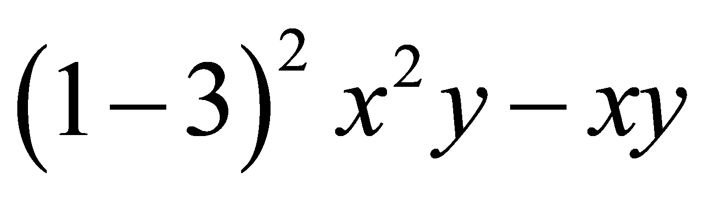
是五次二项式 B．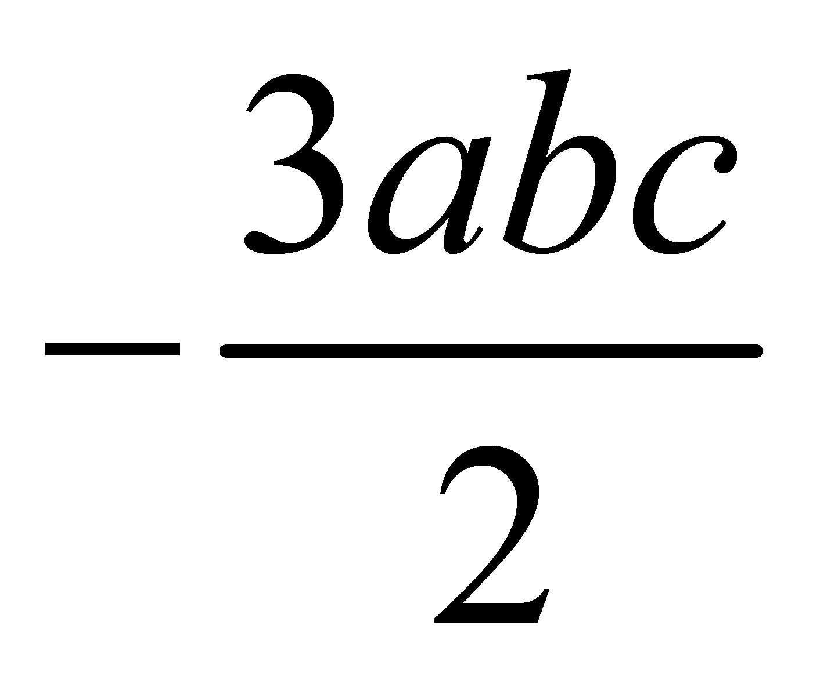
的系数是
C． 不是整式 D．多项式
不是整式 D．多项式
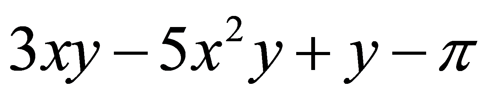
的常数项是
3．（23-24七年级上·河南洛阳·期中）下列说法中，不正确的是（ ）
A． 的系数是
的系数是 ，次数是4 B．
，次数是4 B． 是整式
是整式
C． 是三次二项式 D．
是三次二项式 D．
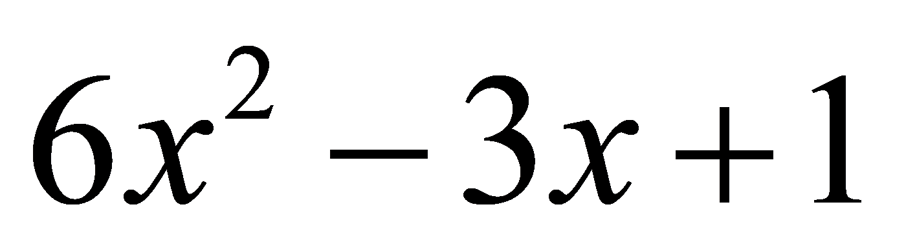
的项是 、
、 ，1
，1【考点五 写出满足某些特征的单项式、多项式】
例题：（23-24七年级下·广东东莞·期中）写出一个含有字母 、
、 的五次单项式： ．
的五次单项式： ．
【变式训练】
1．（23-24七年级上·云南德宏·期末）写出系数为 ，含有字母，的三次单项式 ．
，含有字母，的三次单项式 ．
2．（23-24七年级上·河南新乡·期中）请写出一个只含有字母m、n，且系数为 ，次数为4的单项式 ．
，次数为4的单项式 ．
3．（23-24七年级上·河南新乡·期末）一个关于字母 的二次三项式，它的常数项是，请写出一个满足条件的多项式 ．
的二次三项式，它的常数项是，请写出一个满足条件的多项式 ．
【考点六 将多项式按某个字母升幂（降幂）排列】
例题：（23-24七年级上·广西崇左·期中）多项式
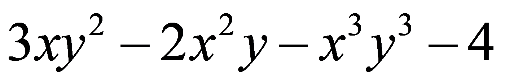
按 降幂排列为 ．
降幂排列为 ．【变式训练】
1．（23-24七年级上·河南新乡·期中）已知多项式 ，将其按的升幂排列为 ．
，将其按的升幂排列为 ．
2．（23-24七年级上·四川宜宾·期末）将多项式 按字母x降幂排列为 ．
按字母x降幂排列为 ．
3．（23-24七年级上·吉林长春·期末）把多项式 按字母x降幂排列，第三项为 ．
按字母x降幂排列，第三项为 ．
【考点七 整式的加减运算】
例题：（23-24七年级上·海南省直辖县级单位·期末）化简下列各式：
(1) ；
；
(2) ．
．
【变式训练】
1．（23-24七年级上·福建龙岩·期中）计算：
(1)
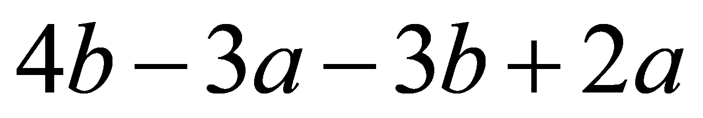
(2)
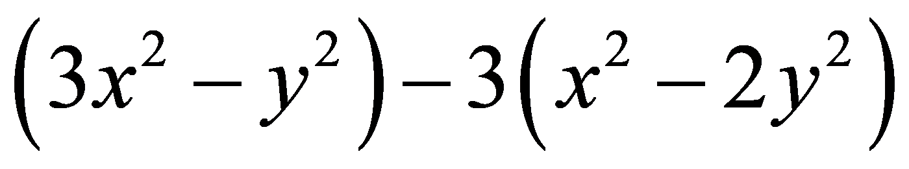
2．（23-24七年级上·河南洛阳·期中）化简下列各式：
(1) ；
；
(2) ．
．
3．（23-24七年级上·新疆伊犁·期中）化简
(1)
(2)
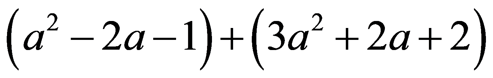
(3)
(4)
【考点八 整式加减运算中先化简再求值】
例题：（23-24七年级上·四川达州·期中）先化简，再求值： ，其中
，其中 ，
， ．
．
【变式训练】
1．（23-24七年级上·江苏盐城·期末）先化简，再求值：
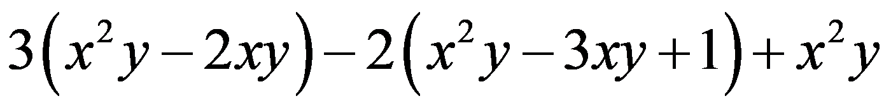
，其中 ，
， ．
．2．（23-24七年级上·江苏镇江·期末）先化简，再求值： ，其中
，其中 ，
， ．
．
3．（23-24七年级上·湖南衡阳·期中）已知代数式 ，
，
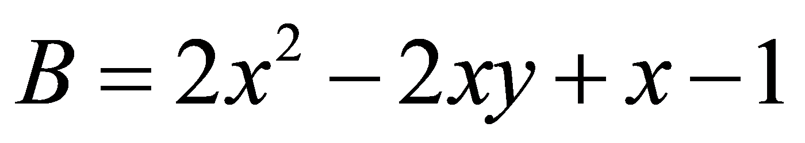
(1)求 ；
；
(2)当 ，
， 时，求的值．
时，求的值．
4．（23-24七年级上·河南安阳·期末）阅读材料：“整体思想”是中学数学的重要思想方法，在解题中会经常用到．我们知道，合并同类项：
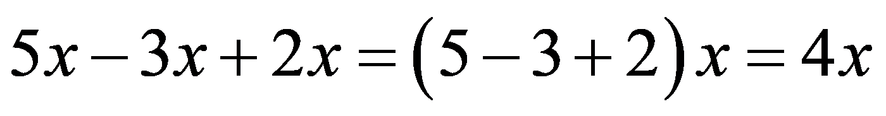
，类似地，我们把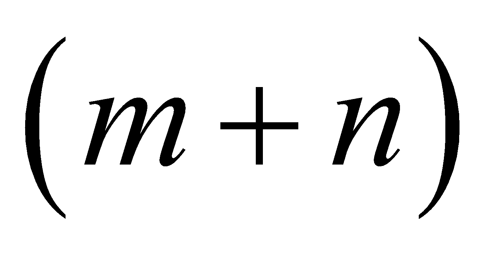
看成一个整体，则 ．
．尝试应用：
 把
把
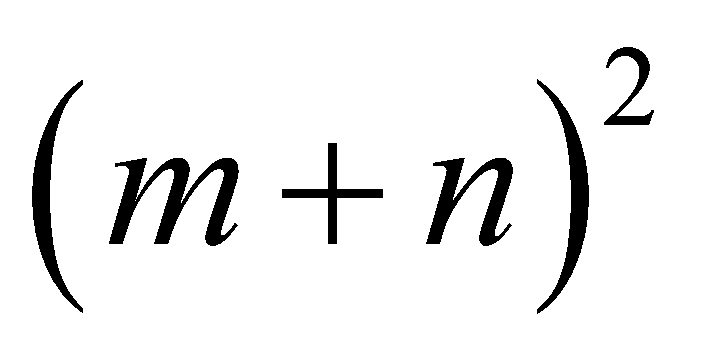
看成一个整体，合并 的结果是______．
的结果是______． 已知
已知 ，求
，求
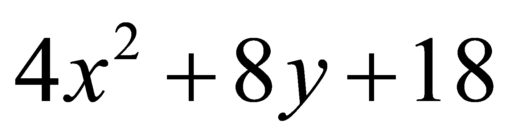
的值．拓展探索：
 已知
已知
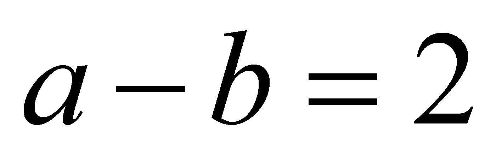
， ，
， ，求
，求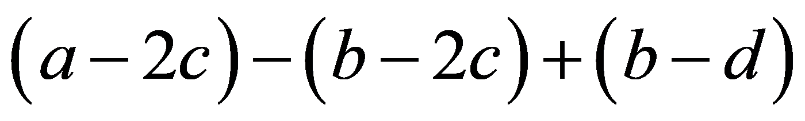
的值．【考点九 整式的加减运算中错解复原问题】
例题：（23-24七年级上·广西南宁·期中）下面是小帆同学进行整式化简的过程，认真阅读并完成相应的问题．

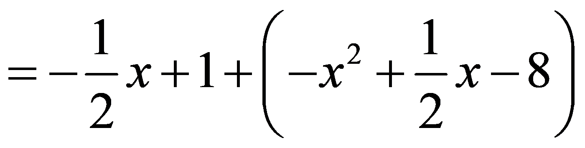
…………第一步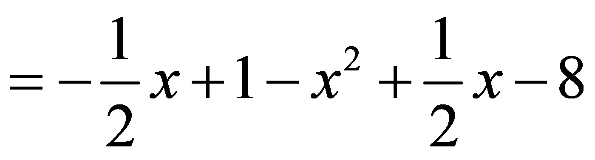
………………第二步 ………………………………第三步
………………………………第三步
(1)以上化简步骤中，第__________步开始出现错误，错误的原因是__________；
(2)请写出正确的化简过程，并计算当
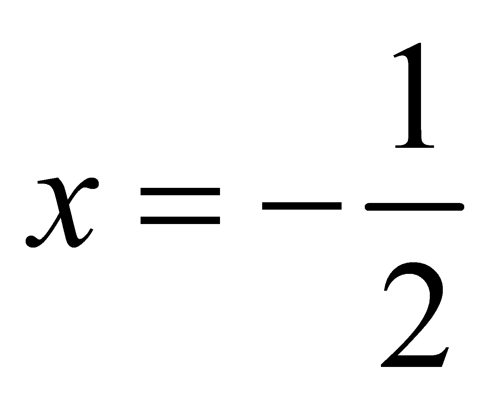
时该整式的值．【变式训练】
1．（23-24七年级上·宁夏吴忠·期中）下面是小明同学进行整式化简的过程，请认真阅读并完成相应任务．

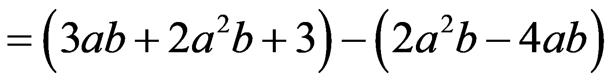
第一步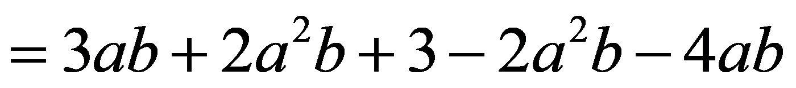
第二步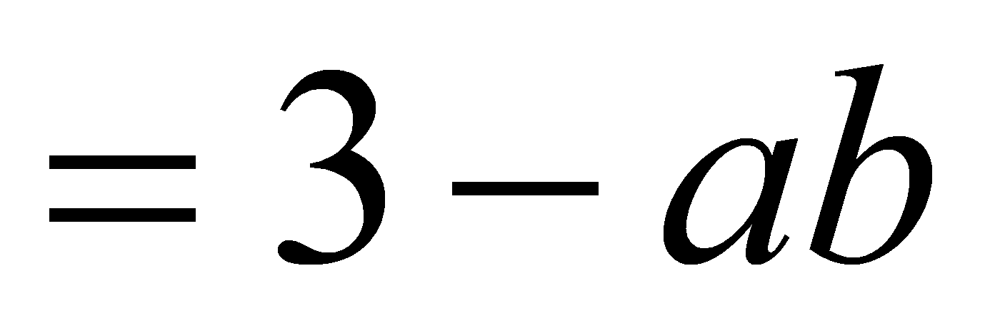
第三步任务一：填空：
①以上化简步骤中，第一步的依据是________；
②第________步开始出现错误，这一步错误的原因是_________；
任务二：请直接写出该整式化简后的正确结果________．
2．（23-24七年级上·贵州黔东南·期中）下面是马小虎同学做的一道题：
化简： ．
．
解：原式 ………………第一步
………………第一步
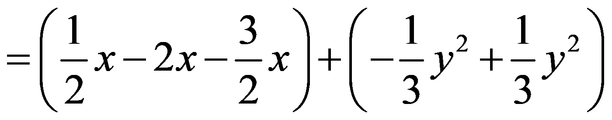
…………………第二步 ………………………………………………………第三步
………………………………………………………第三步
(1)上面的解题过程中最早出现错误的步骤是第 步；
(2)请写出正确的解题过程．
【考点十 整式加减中的无关型问题】
例题：（23-24七年级上·重庆渝北·期末）若关于、 的多项式
的多项式 不含
不含 的一次项，则
的一次项，则 的值为 .
的值为 .
【变式训练】
1．（23-24七年级上·湖北省直辖县级单位·阶段练习）若化简 的结果与的取值无关，则
的结果与的取值无关，则 的值为 ．
的值为 ．
2．（23-24七年级上·广东广州·期中）要使多项式 化简后不含x的二次项，则m等于 ．
化简后不含x的二次项，则m等于 ．
【考点十一 整式加减的应用】
例题：（23-24七年级上·江西南昌·期末）如图，正方形 和正方形的边长分别为a和6，点C，D，E在一条直线上，点B、C、G在一条直线上，将依次连接D、E、F、B所围成的阴影部分的面积记为
和正方形的边长分别为a和6，点C，D，E在一条直线上，点B、C、G在一条直线上，将依次连接D、E、F、B所围成的阴影部分的面积记为 ．
．
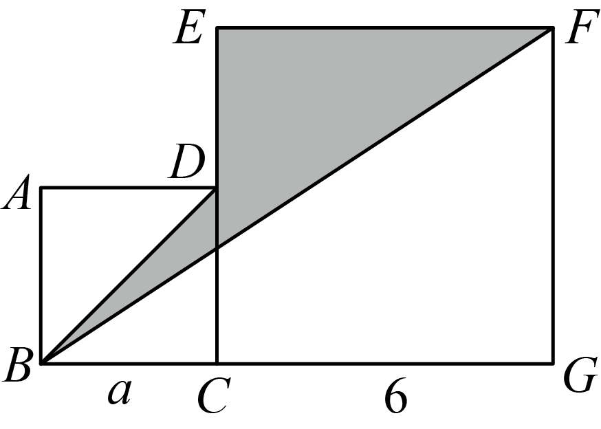
(1)试用含a的代数式表示；
(2)当 时，比较与
时，比较与
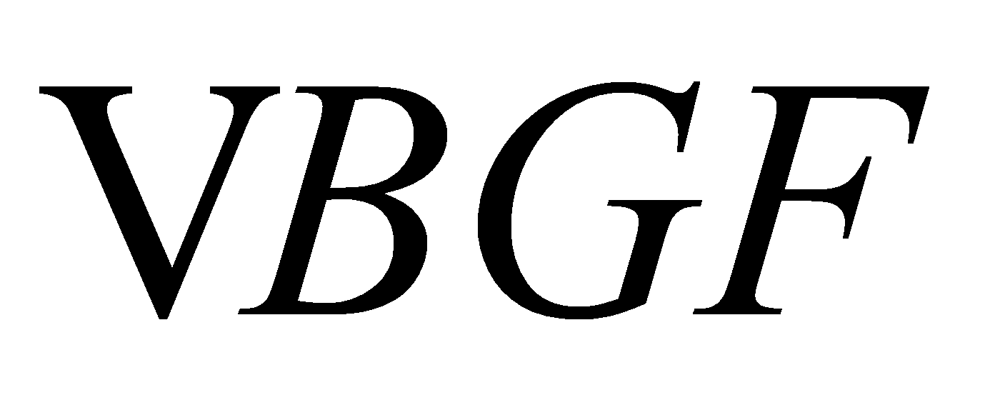
面积的大小．【变式训练】
1．（23-24七年级上·河南驻马店·期末）如图，学校要利用专款建一长方形的电动车停车场，其他三面用护栏围起，其中长方形停车场的长为 米，宽比长少
米，宽比长少
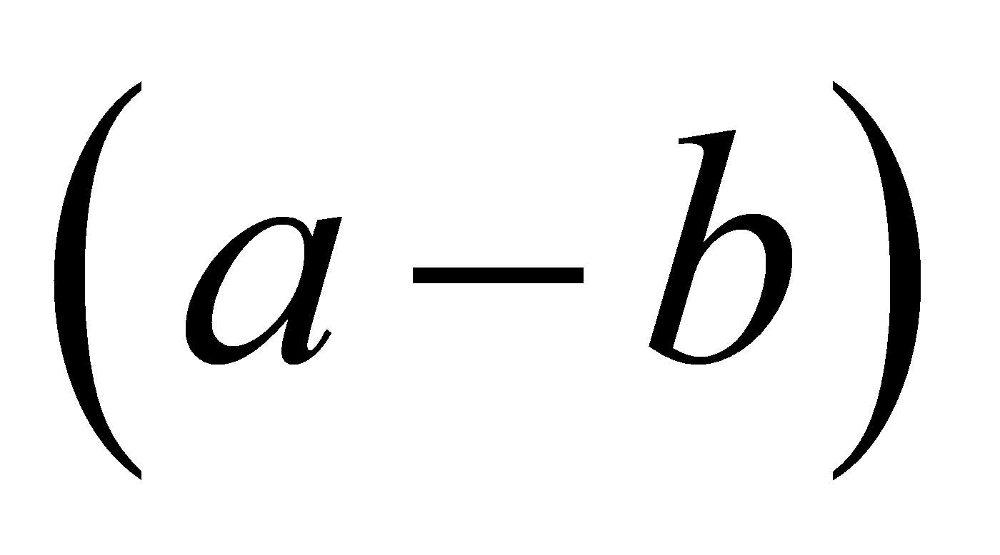
米．(1)用 表示长方形停车场的宽；
表示长方形停车场的宽；
(2)求护栏的总长度；
(3)若 ，每米护栏造价100元，求建此停车场所需的费用．
，每米护栏造价100元，求建此停车场所需的费用．
2．（23-24七年级上·湖北宜昌·期中）甲、乙两商场分别出售A型、B型两种电暖气，零售价及运费如下表所示：
商场 | A型电暖气 | B型电暖气 | 运费 | |
A电暖气 | B电暖气 | |||
甲 | 200元/台 | 300元/台 | 10元/台 | 10元/台 |
乙 | 220元/台 | 290元/台 | 免运费 | 12元/台 |
某公司计划在甲商场或乙商场选择一家采购两种电暖气共100台，其中A型电暖气需要买x台．
(1)请用含x的代数式分别表示在两家商场购买电暖气所需要的总费用（总费用=购买价+运费）；
(2)若需购买A型电暖气40台，在哪个商场购买划算？若可以同时在两家商场自由选择，还有更优惠的方案吗？请你设计一种方案．
【考点十二 整式加减中的新定义型问题】
例题：（23-24七年级上·福建龙岩·期末）给出如下定义：我们把有序实数对
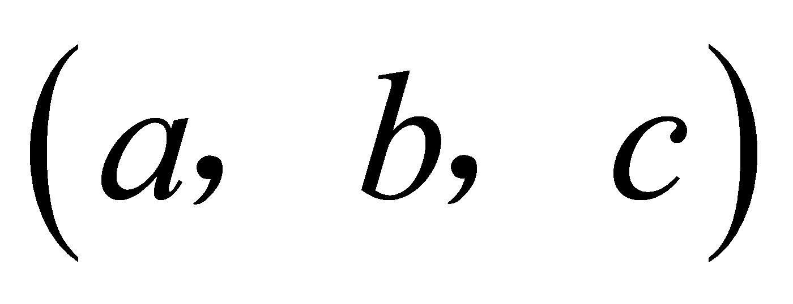
叫做关于x的二次多项式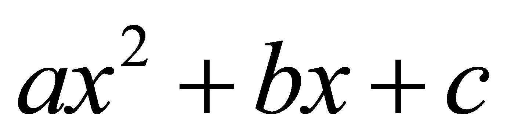
的附属系数对，把关于x的二次多项式叫做有序实数对的附属多项式．(1)关于x的二次多项式
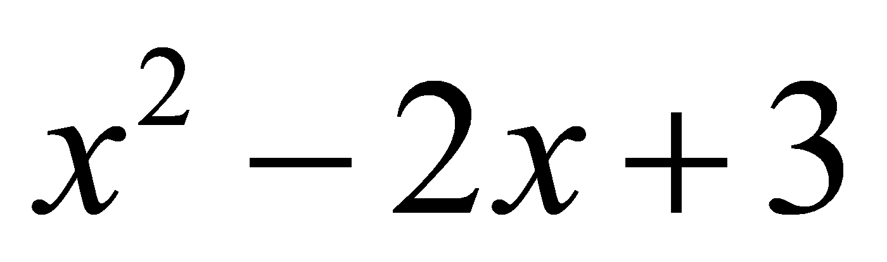
的附属系数对为______；(2)有序实数对
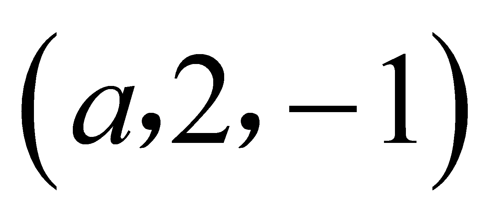
的附属多项式与有序实数对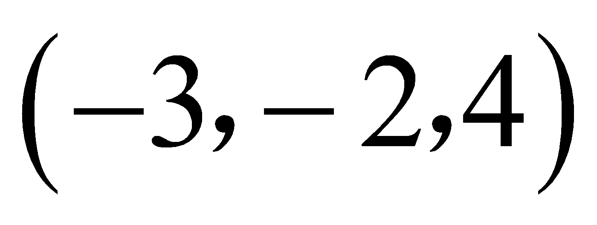
的附属多项式的差中不含二次项，求a的值．【变式训练】
1．（23-24七年级上·吉林延边·期末）定义：若 ，则称a与b是关于6的实验数．
，则称a与b是关于6的实验数．
(1)4与________是关于6的实验数；式子________与 是关于6的实验数；
是关于6的实验数；
(2)若 ，
， ，判断a与b是否是关于6的实验数，并说明理由．
，判断a与b是否是关于6的实验数，并说明理由．
2．（23-24七年级上·湖北咸宁·期中）定义：若
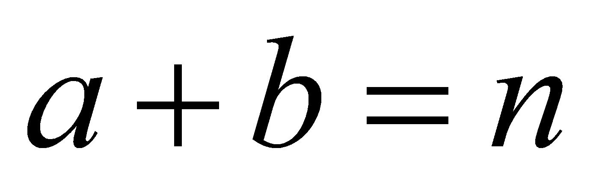
（n为常数），则称a与b是关于数n的“平衡数”．例如3与 是关于
是关于 的“平衡数”，5与12是关于17的“平衡数”．
的“平衡数”，5与12是关于17的“平衡数”．(1)若a与 的“平衡数”是0，则a= ；
的“平衡数”是0，则a= ；
(2)若a与b是关于3的“平衡数”，则 与
与
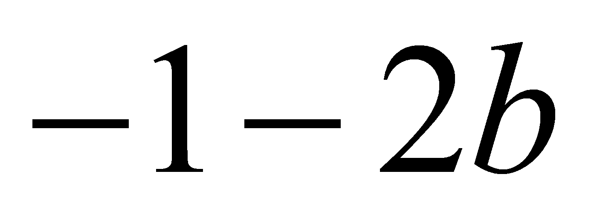
是关于哪个数的“平衡数”？请通过计算说明；(3)已知 ，
，
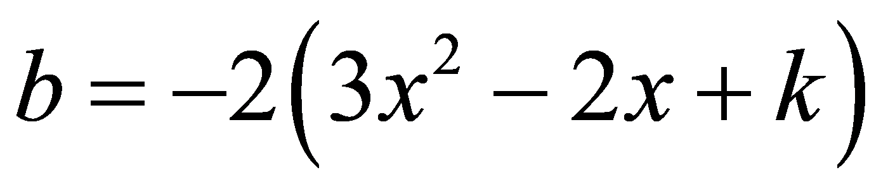
（k为常数），且无论k为何值时，a与b始终是关于数n的“平衡数”，求n的值．3．（23-24七年级上·北京西城·期中）定义：若一个多项式的各项系数之和为7的整数倍，则称这个多项式为“7倍系数多项式”，称这个多项式的各项系数之和为“7倍系数和”．
例如：多项式 的系数和为
的系数和为 ，所以多项式是“7倍系数多项式”，它的“7倍系数和”为28．
，所以多项式是“7倍系数多项式”，它的“7倍系数和”为28．
请根据这个定义解答下列问题：
(1)在下列多项式中，属于“7倍系数多项式”的是 ；（在横线上填写序号）
① ；②
；② ；③
；③
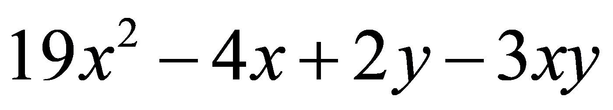
．(2)若多项式 是关于x、y的“7倍系数多项式”（其中m，n均为整数），则多项式
是关于x、y的“7倍系数多项式”（其中m，n均为整数），则多项式 也是关于x、y的“7倍系数多项式”吗?若是，请说明理由；若不是，请举出反例．
也是关于x、y的“7倍系数多项式”吗?若是，请说明理由；若不是，请举出反例．
【考点十三 整式加减中的规律探究问题】
例题：（23-24七年级上·四川达州·期末）用三角形和六边形按如图所示的规律拼图案．

(1)第4个图案中，三角形的个数有 个，六边形的个数有 个；
(2)第n（n为正整数）个图案中，三角形的个数与六边形的个数各有多少个？
(3)第2024个图案中，三角形的个数与六边形的个数各有多少个？
(4)是否存在某个符合上述规律的图案，其中有100个三角形与30个六边形？如果有，指出是第几个图案；如果没有，说明理由．
【变式训练】
1．（23-24七年级上·四川达州·期中）如图，从左边第一个格子开始向右数，在每个小格子中都填入一个整数，使得其中任意三个相邻格子中所填整数之和都相等．
1 | ● | ○ |
| 7 |
| … |
(1)可知x＝ ，●＝ ，○＝ ；
(2)试判断第2023个格子中的数是多少？并给出相应的理由．
(3)判断：前n个格子中所填整数之和是否可能为2024？若能，求出n的值，若不能，请说明理由．
2．（23-24七年级上·河南平顶山·期中）餐厅摆放桌椅，照这样的方式继续排列餐桌，摆n张餐桌可坐人数为.

(1)______（用n表示）； ______；
______；
(2)我们用“☆”定义一种新运算：对于任意有理数α和正整数n.规定：，如：.
①计算： 的值；
的值；
②与互为相反数吗？请说明理由.
3．（23-24七年级上·安徽·期末）探索规律：
在数学探究课上，小明将一张面积为1的正方形纸片进行分割，如图所示：
第1次分割，将此正方形的纸片三等分，其中空白部分的面积记为 ；
；
第2次分割，将第1次分割图中空白部分的纸片继续三等分，其中空白部分的面积记为 ；
；
第3次分割，将第2次分割图中空白部分的纸片继续三等分，其中空白部分的面积记为 ；
；
……
根据以上规律，完成下列问题：
(1)尝试：第4次分割后， ______
______
(2)初步应用：根据规律，求 的值．
的值．
(3)拓展应用：利用以上规律，求 的值．
的值．